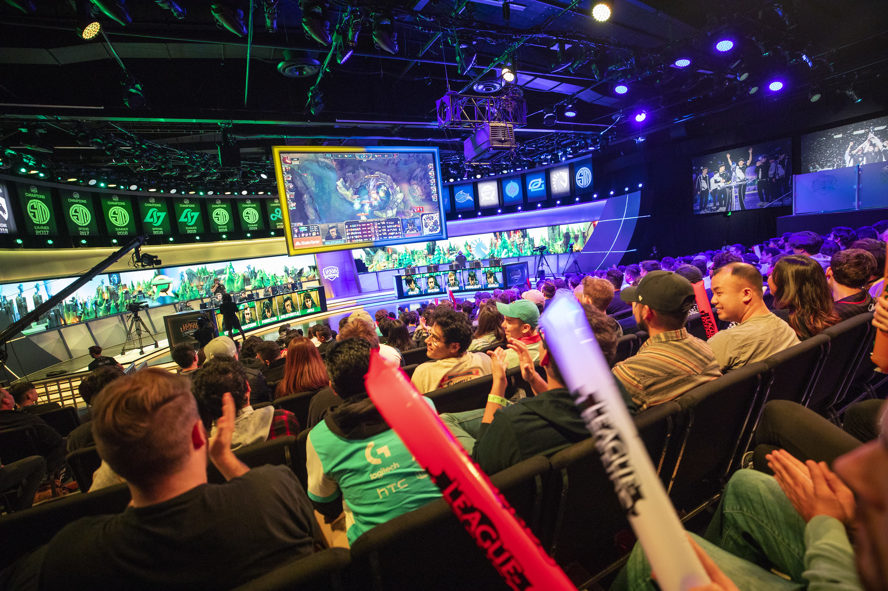
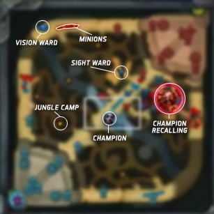
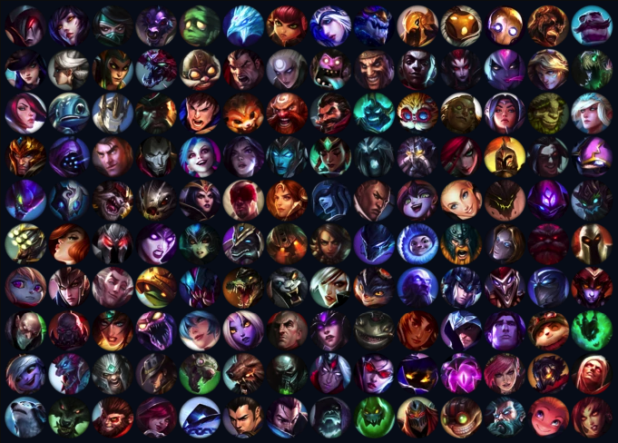
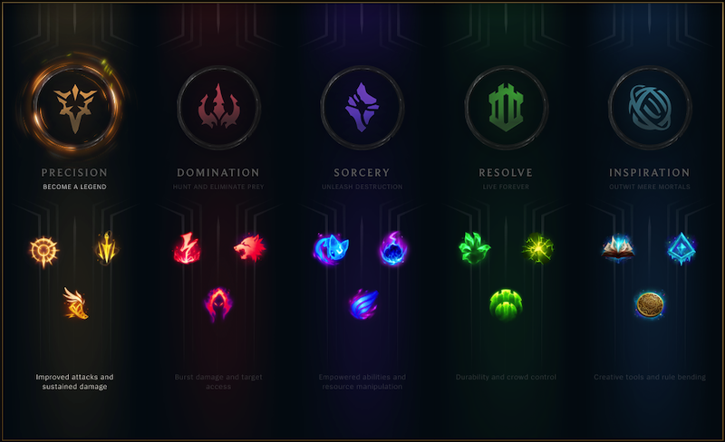
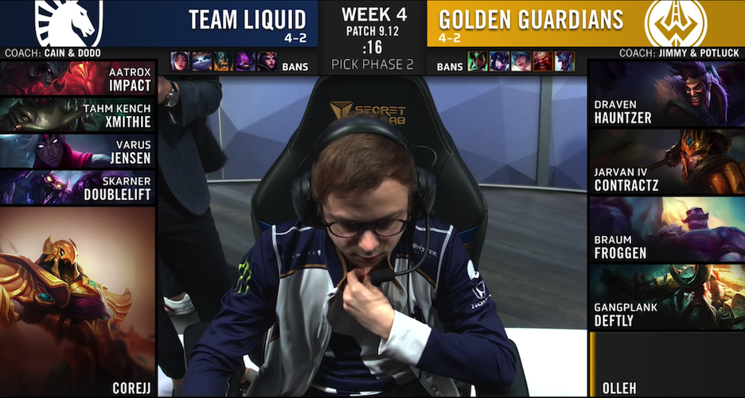
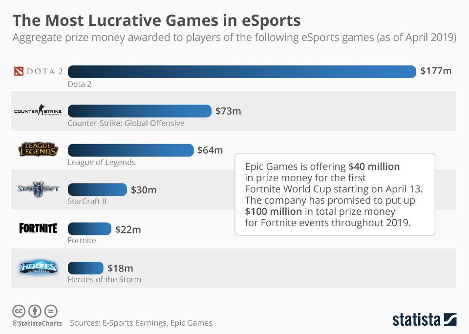

League of Legends: A Game That Virtually Emulates Sport.
(Fans Enjoying an LCS match featuring teams Counter Logic Gaming and Team Liquid. Image via Riot Games).
Although formal definition of what constitutes an eSport is unclear, many games like League of Legends are exclusively referred to as eSport without much thought. Before being able to understand why League of Legends does legitimately fit the label "eSport," it is necessary to understand how a given video game can function as a competitive event which emulates traditional conceptions of sport.
What is lol?
(Introduction to LoL created by Riot Games).
League of Legends is a multiplayer online battle arena (MOBA) game that was inspired by a World of Warcraft III: The Frozen Thrown mod (alteration of a game typically made by fans or players) titled "Defense of the Ancients." Its gameplay is highly team-oriented, with all playable modes requiring some form of teamwork. The mode that is generally seen in competitive play is "5v5 Summoner's Rift," which features two teams (one with a blue color scheme and the other with a red color scheme) of five facing against each other on the map Summoner's Rift with the goal or win condition of destroying your enemy's turrets and main base referred to as a "nexus." If a team destroys the enemy's nexus, they are considered the victor. A match can take anywhere from 20-50 minutes, extending to 35-115 minutes if you include the "picks & bans" or champion select phase (discussed further below).
Each team has five standardized roles: Top (who typically faces off versus the enemy Top in the Top "lane" of the map while farming minions or "creeps" to gain gold in order to purchase items that increase character stats, provide utility such as increased map vision, or add abilities), Jungle (who focuses on earning gold by slaying monsters at camps present on Summoner's Rift to purchase items, "ganking" or assisting the Top, Middle, and Bottom lanes, and gaining map control/increased team stats through the placement of items called "vision wards" and the slaying of legendary monsters such as the "Drakes/Dragons" or "Baron Nashor"), Middle (who functions similar to Top, yet in the Middle "lane" of the map and typically "roams" or travels to assist other lanes similar to Jungle), Bottom (who pairs up with the Support in the Bottom lane of the map and focuses on earning high amounts of gold to purchase high-damage items. Due to this, Bottom is commonly referred to as the game's "carry" or the champion with the team's highest damage per second or "DPS"), and—last but not least—Support (who pairs up with the Bottom in the Bottom "lane" of the map and focuses on purchasing vision wards and utility-based items to gain strategic control of the map and help defend, heal, and increased the stats of Top, Bottom, Middle, and Jungle). Each role spends a chunk of the game earning gold through the elimination of monsters, minions, enemy champions, and turrets, followed by largely team-based fights and skirmishes surrounding major objectives such as the Drakes and Baron Nashor (which provide "buffs" or increases to player stats either permanently or temporarily) and Inhibitors (which provide the team destroying it with "super minions," which are stronger minions that assist teams similarly to regular minions by slowly eliminating enemy minions, turrets, and the Nexus).
(Minimap from LoL UI showcasing lanes and jungle. Labels and editing via Leaguepedia/Wikia).
The game currently features 144 champions (playable characters) which can be purchased for unlimited use with "free" in-game currency (earned through playing matches) or paid in-game currency known as "Riot Points" or "RP." Each champion has unique abilities and stats that progress and improve as one levels up in the game by acquiring experience from turret, minion, and enemy champion eliminations.
(Icons showcasing 140 of LoL's champion pool. Image via Mobalytics/Gamers Net, Inc.).
League of Legends also features a "rune" system, which allows for the customization of certain small abilities and stats that can give competitive edges against opponents during various time intervals in a match.
(Current rune system, introduced in the 2017/Season 7 Preseason update. Image via Riot Games).
In LoL's ranked mode (where players are placed into various hierarchical divisions through an Elo system similar to that of chess) and professional competitions, players select their team's composition of champions through a phase typically referred to as champion select or "picks and bans." The picks and bans phase is crucial to game strategy, as teams can choose to ban out champions that the enemy typically uses or are proficient at. Teams can also simply ban out champions that they think are overly strong or those which they do not know how to properly play against using their optimal strategies. The system for picks and bans in competitive play—as explained by Riot—always follows this pattern:
- Ban phase 1: Starting with Blue, the two teams alternate banning champions until 3 bans are made by each team.
- Pick Phase 1: Blue team chooses a champion first, followed by two picks by Red, two picks by Blue, and then a single Red pick.
- Ban Phase 2: Starting with Red, the two teams alternate banning champions until 2 bans are made by each team.
- Pick Phase 2: Red team chooses a champion, followed by two picks by Blue, and ending with a final Red pick
Essentially, LoL is a game that requires high levels of synergy and teamwork. It is highly customizable and allows for thousands of champion, item, ban, and rune combinations to enable unique and creative strategies. It also has an extremely high skill cap, as learning how to play well as and against 144 different champions who function in specific ways takes thousands of hours of practice.
(Champion select/picks and bans screen with the 2019 LCS stream overlay. Image via Riot Games).
League of Legends also features a "rune" system, which allows for the customization of certain small abilities and stats that can give competitive edges against opponents during various time periods of a match.
Okay sounds great, but why does this make LoL an "eSport"?
As discussed in the previous section on eSports classification, eSport definitions are very subjective. However, in my opinion and through my research, a eSport must have four simple qualifications to be socially viewed as an eSport. They must be organized and exhibit professional standards of play and conduct, they must be competitive with fairly low barriers to entry, they must require some level of intellectual engagement through the optimization of practice and/or highly complex strategy, and they must be broadcast to the general public without paywall (of course, embedded ads are allowed). Although eSports are not regulated in a legal sense in North America, they do usually involve at least regulation from the eSport developer themselves. League of Legends satisfies all of these qualifications easily, as there are multiple professionalized LoL leagues that are ran across the world which have rules that encourage professionalism and sportsmanlike conduct and have relatively low barriers to entry due to merit-based recruiting practices. The game also has completely free access to practice due to LoL's "freemium" business model (other than the need for basic hardware and internet connection) and allows for extensive, complex in-game strategies and theories regarding optimal practice methods. Additionally, broadcasting of LoL eSports is provided to viewers on both YouTube and Twitch without paywall. To illustrate intellectual engagement and practice optimization, professional LoL players or athletes practice for hours and hours to reach the highest competitive level, with many players stating that they practice for 12-15 hours per day. Teams, especially within the LCS, have full scale coaching staffs to facilitate pick & ban, practice, and team composition strategy development. If this is not enough to convince you that League of Legends is an eSport, South Korea's governmentally-supported, longest-standing eSports regulatory body in the world known as the Korea e-Sports Association (KeSPA) includes League of Legends as a major recognized eSport and organizes their own professional league (known as League Champions Korea or the LCK).
What makes League of Legends a representative case study for eSports research?
While League of Legends has not been around forever in the eSports scene, it has been a mainstream eSport ever since its first World Championship in 2011. It has fluctuated in popularity, but consistently puts up extremely high numbers of watched hours, with the 2018 World Championship having 81.1 million hours watched combined across Twitch and YouTube. It is also one of the most lucrative eSports on the market with high average salaries, the third (or fourth, as Epic Games continues to give out their total Fortnite prize pool of $100 million) highest amount of awarded prize money, and teams worth a minimum of $10 million each. There are many other metrics that could help to solidify League of Legends clearly as a representative eSport (such as size of player base and revenue relative to other games), but these alone justify the use of LoL as a case study due to its status as a widely accepted eSports title and its overall influence on the eSports industry.
